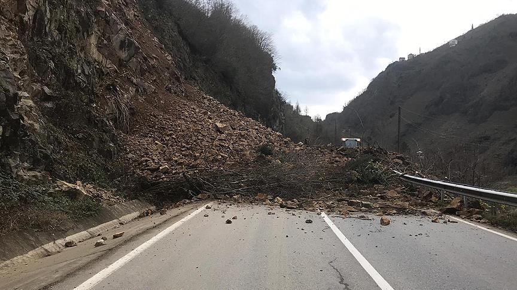

Heyelan Afeti Nedir?

Heyelan, yer yüzeyindeki toprağın, kayaların veya diğer malzemelerin doğal nedenlerle veya insan etkisiyle hareket etmesi sonucu meydana gelen toprak kaymalarıdır. Heyelanlar genellikle eğimli arazilerde, aşırı yağış, zemin yapısının zayıf olması ya da insan faaliyetleri nedeniyle oluşur.
📌 Heyelanlar, özellikle dağlık ve eğimli bölgelerde, yağışların yoğun olduğu dönemlerde meydana gelir ve büyük can ve mal kayıplarına neden olabilir.
Heyelan Öncesinde Ne Yapmalıyım?
Heyelan öncesinde alınacak tedbirler, hem can güvenliğini sağlamak hem de afet sonrası etkilenen bölgelere ulaşım sağlamanın kolaylaştırılması açısından çok önemlidir:
Alınması Gereken Önlemler:
- Acil durum planı hazırlayın: Heyelan riski olan bölgelerde, heyelan anında yapılacakları içeren bir plan oluşturun.
- Ev ve çevreyi güçlendirin: Evinizin çevresindeki eğimli alanları, drenaj sistemlerini kontrol edin ve gerekli önlemleri alın.
- Toprak kayması bölgesini belirleyin: Yağmur sonrası toprak kayması riski olan alanları öğrenin ve bunlardan uzak durun.
- Toplanma alanlarını belirleyin: Heyelan durumunda güvenli toplanma alanları belirleyin ve bu alanları ailenizle paylaşın.
Heyelan Anında Ne Yapmalıyım?
Heyelan sırasında yapılacak doğru müdahale, hayati önem taşır. Panik yapmadan güvenli bir şekilde hareket etmek gerekir:
Heyelan Anında Yapmanız Gerekenler:
- İçerideyseniz: Binanızda kalmayın. Hemen dışarıya çıkın ve mümkünse yüksek alanlara yönelin.
- Açık alandaysanız: Kayma alanlarından uzak durun ve eğimli alanlardan hızlı bir şekilde uzaklaşın.
- Yol üzerindeyseniz: Yolda ilerliyorsanız, hemen araçtan inin ve yüksek, güvenli bir alana yönelin.
- Yağışlı havalarda dikkatli olun: Sürekli yağan yağmurlarda heyelan riski artar, bu yüzden uyarıları dikkate alarak tedbir alın.
Heyelan Sonrasında Ne Yapmalıyım?
Heyelan sonrası yapılacak doğru adımlar, hayatta kalma şansını artırabilir. Ayrıca, acil durumlarda doğru müdahaleler önemlidir:
Heyelan Sonrası Yapmanız Gerekenler:
- Panik yapmayın: Soğukkanlı kalın, güvenli bir alana geçin ve yardım çağırın.
- Yaralıları kontrol edin: Yerde kalan ya da yaralanmış olanları hemen yardım etmek için yerel ekiplerle iletişime geçin.
- Yetkililere haber verin: Heyelan ile ilgili doğru bilgileri yetkililere ileterek yardım süreçlerine katılın.
- Yolculuk yapmayın: Heyelan bölgesine girmeyin, geçiş yolları kapanmış olabilir.
Afetzedeler İçin Öneriler
Heyelan sonrasında afetzedeler için yapılacak bazı öneriler, hem sağlık hem de psikolojik olarak destek olacaktır:
Heyelan Sonrası Afetzedeler İçin Öneriler:
- Yaralıysanız: Yardım talep edin veya acil sağlık ekiplerine başvurun.
- Psikolojik destek alın: Heyelan sonrası stresli bir dönem olabilir. Psikolojik destek almayı ihmal etmeyin.
- Yaralıları taşımak için yardım isteyin: Yaralılar için acil yardım hatlarına başvurun.
- En yakın toplanma alanına gidin: Heyelan sonrası, güvenli alanlar için en yakın toplanma alanına gidin.
Yardım Almak İçin:
- Yardım Talep Formu sayfasını doldurun.
- Toplanma Alanları Alanları sayfasından en yakın toplanma alanını öğrenin.
- Acil durumlarda yardım hatlarına başvurun ve en yakın yerel yetkililere ulaşın.